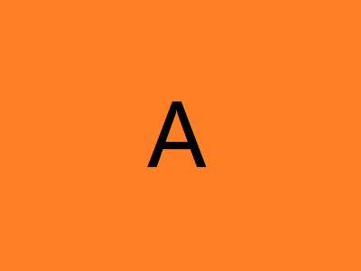
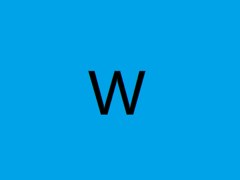
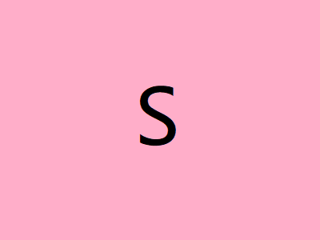

RS
Card
关于
技能
作品
作品1
作品2
作品3
博客
博客1
博客2
博客3
日历
联系方式
其他
Hello
赵 洋
前端开发工程师
年龄
21
所在城市
重庆
邮箱
1454598339@qq.com
手机
13045678912
下载 PDF 简历
学习前端中...以前是条懒狗，现在争取当一条勤快的dog，2333...
wryyyy! something for nothing!
技能
HTML 5 & CSS 3
JavaScript
JQuery
Vue.js
React.js
Node.js
作品集
所有
框架
原生JS&CSS
  
留言
姓名
内容